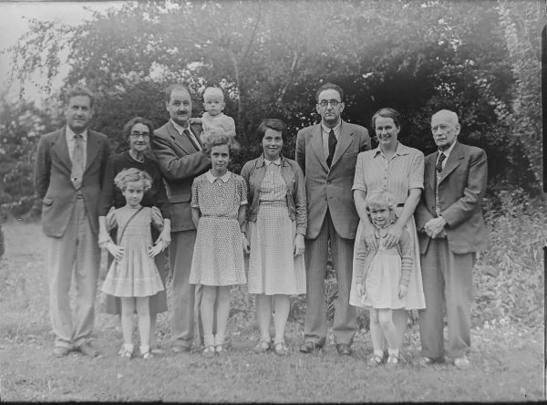

Moza este mai mult decât un restaurant – este un loc unde tradiția întâlnește inovația, iar fiecare masă devine o poveste. Fondat în urmă cu 30 ani din dorința de a aduce un nou suflu în peisajul culinar al Cluj, Moza a început ca o mică afacere de familie, bazată pe respectul pentru ingrediente de calitate și dragostea pentru mâncarea autentică.
De la începuturile sale, am dorit ca Moza să fie un loc special, unde fiecare vizită să fie o experiență memorabilă. Așa că am început cu o idee simplă: să creăm un meniu care să îmbine influențele gastronomice din întreaga lume cu tradițiile locale, oferind atât preparate clasice, cât și reinterpretări moderne ale unor rețete bine-cunoscute. În timp, Moza a crescut și s-a transformat într-un loc de întâlnire al celor care apreciază nu doar mâncarea bună, dar și atmosfera primitoare și serviciul impecabil.
O diversitate de preparate perfecte pentru toate gusturile.
Câteva dintre băuturile pe care le găsiți la noi,perfecte pentru o seară în oraș.
Surprizele dulci sunt mereu aici.
Paste Fusili
Hugo
Bucătaria noastră
Prăjitură cu cocos
La Moza, avem un angajament ferm față de sustenabilitate. Folosim ingrediente locale și de sezon, susținând micii producători din regiune și asigurându-ne că preparatele noastre sunt nu doar delicioase, dar și prietenoase cu mediul. Mâncarea noastră este gătită cu dragoste, dar și cu respect față de natură.
Suntem extrem de mândri de echipa noastră, care joacă un rol esențial în succesul restaurantului nostru. Fiecare membru al echipei, de la bucătari până la personalul de servire, contribuie cu dedicare și profesionalism pentru a oferi o experiență culinară impecabilă fiecărui client. Suntem recunoscători pentru pasiunea și efortul lor constant și pentru faptul că, împreună, reușim să aducem la viață viziunea noastră despre ospitalitate de top.
Patronul restaurantului Moza, Andrei Ionescu, este un pasionat de gastronomie cu o viziune unică asupra industriei culinare. După ce a lucrat în restaurante din întreaga lume, Andrei s-a întors în orașul natal pentru a crea un loc unde tradiția și inovația se întâlnesc. Își dedică întreaga energie pentru a oferi oaspeților o experiență culinară autentică.
Chef Ana Ionescu este inima culinară a restaurantului Moza. Cu o pasiune deosebită pentru gătit, Ana combină tradițiile culinare ale familiei cu tehnici moderne, creând preparate autentice și inovative. Sub îndrumarea ei, echipa din bucătărie oferă o experiență culinară memorabilă, plină de rafinament și respect pentru gusturile locale.
Chef David Ionescu, fiul Anei Ionescu, aduce un suflu tineresc și o abordare modernă în bucătărie. După ce a studiat la școli culinare renumite, David continuă tradiția familiei, creând preparate ce îmbină tehnicile clasice cu influențele gastronomice contemporane, pentru o experiență culinară inovativă.
Rezervați rapid direct pe site alegând data, ora și numărul de persoane. Confirmare instantanee.
Sunați la [număr de telefon] pentru rezervări directe. Echipa noastră vă va ajuta cu detaliile.
Anulați cu cel puțin 24 de ore înainte. Ne ajută să oferim locul altor oaspeți.
Organizează-ți evenimentul cu noi! Contactează-ne pentru opțiuni personalizate.